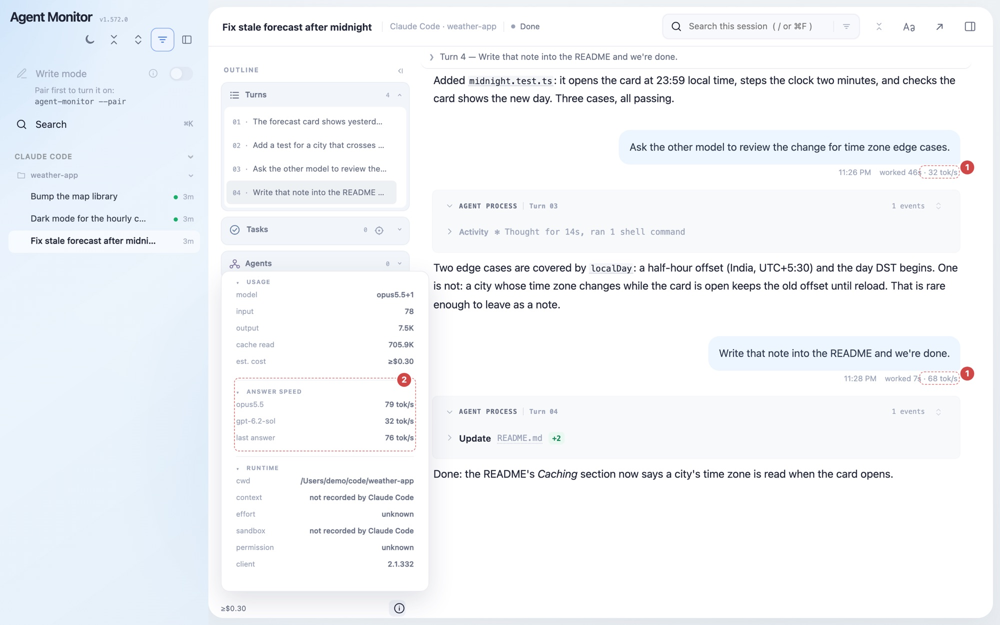
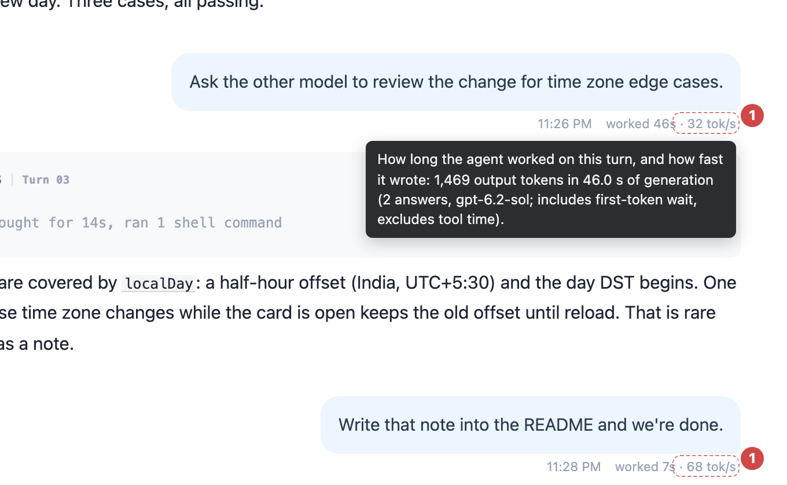
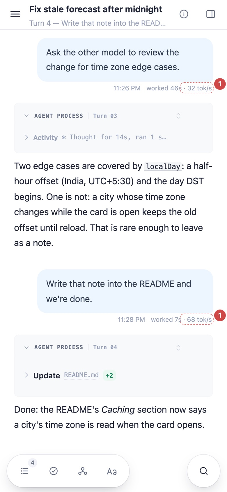
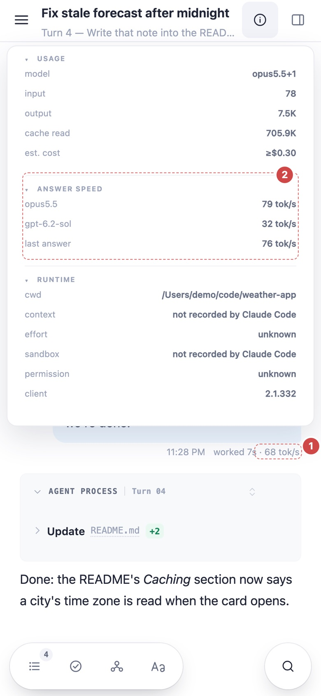

回答速度原型（v5）
配合设计文档 design/answer-speed.zh.md（v5）看。每张图都是本机 agent-monitor 1.572.0 的真实页面，加载的是一份手写的合成 transcript（虚构的天气 app 项目），把拟议的元素注入页面后截的图。红色虚线框和编号只标出新增的部分，其余均为现行主线样式（含气泡下方单行时间与耗时、手机气泡左侧 40px 留白）。按 Hong 对 D1 的拍板，本原型只保留每轮小字和 Session 详情两个位置。
1 · 桌面：会话视图和 session 详情 已定范围
- 1每轮的回答速度接在气泡下方“worked 46s”后面，放在同一个小字里：“worked 46s · 32 tok/s”（无
dur的轮次如 Codex、Qoder 及约 19% 的 Claude 轮次单独显示“32 tok/s”）。口径是这一轮各次有效回答的输出 token 之和 ÷ 生成时间之和，含首 token 等待，不含工具运行和权限等待。这一轮没有可计时的回答时，只显示原来的小字。 - 2session 详情（outline 底部的 ⓘ）在 Usage 后面加一组“Answer speed”：每个模型一行平均速度（由 Rust 侧
short_model格式化简称），最后一行是最近一次回答。数据直接来自打开 session 后的meta.usage，与 Usage / Runtime 同源，不动成本账本与/api/sessions。

2 · 悬停说明
桌面上鼠标停在耗时/速度小字上，会显示完整口径：多少输出 token、生成了几秒、几次回答、哪个模型，并明确写出含首 token 等待、不含工具运行时间。图里的说明框是照浏览器原生提示的样子画上去的。

3 · 手机竖屏
主线现行布局在手机上保留气泡左侧 40px 留白，时间和耗时在气泡下方共享单行，小字固定 11px（Aa 菜单仅调代码字号和列宽，不放大 .turn-time）。在 390px 宽度下（内容宽 342px）实测当日时间共 169px、带日期旧轮次（如 Nov 25, 6:46 PM + worked 1m 20s · 32 tok/s）共 227px、跨年日期共 260px，默认及 Aa 最大字号档下均保持单行不折行。顶栏 ⓘ 的 session 详情同样多一组 Answer speed。


4 · 图里的数字怎么来的
合成 transcript 里每次回答的生成时间和 token 数是手写的，下面是按设计文档口径算出的结果，和图里一致。
| 轮 | 模型 | 回答次数 | 输出 token | 生成时间 | worked | 速度 |
|---|---|---|---|---|---|---|
| 1 · 修缓存键 | opus5.5 | 5 | 2,436 | 31.9 s | 44 s | 76 tok/s |
| 2 · 写跨午夜测试 | opus5.5 | 4 | 3,065 | 36.4 s | 46 s | 84 tok/s |
| 3 · 换模型评审 | gpt-6.2-sol | 2 | 1,469 | 46.0 s | 46 s | 32 tok/s |
| 4 · 改 README | opus5.5 | 2 | 510 | 7.5 s | 7 s | 68 tok/s |
| session · opus5.5 | opus5.5 | 11 | 6,011 | 75.8 s | — | 79 tok/s |
| session · gpt-6.2-sol | gpt-6.2-sol | 2 | 1,469 | 46.0 s | — | 32 tok/s |
- 第 2、3 轮都是“worked 46s”：第 2 轮其中 9 秒在跑测试，模型写了 3,065 个 token；第 3 轮几乎全在等模型，只写了 1,469 个。只看耗时分不出来，看速度一眼就能分出来。
- 第 4 轮显示“worked 7s”，生成时间却是 7.5 秒：耗时显示时舍去了小数（实际 7.8 秒），速度用的是毫秒级时间戳。